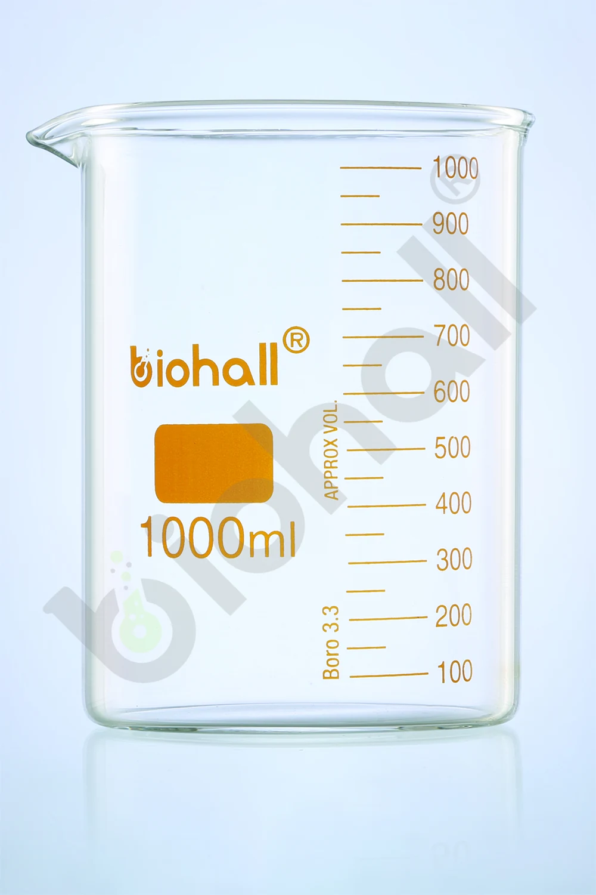

01 / BIOHALL

Beakers
Beakers, Low Form with Spout, DIN/ISO
Low-form glass beakers with a pouring spout, a large labelling field, and clear metric graduations. Uniform wall thickness supports laboratory heating applications.
Selected item: BLS.1000.05
VIEW PRODUCT